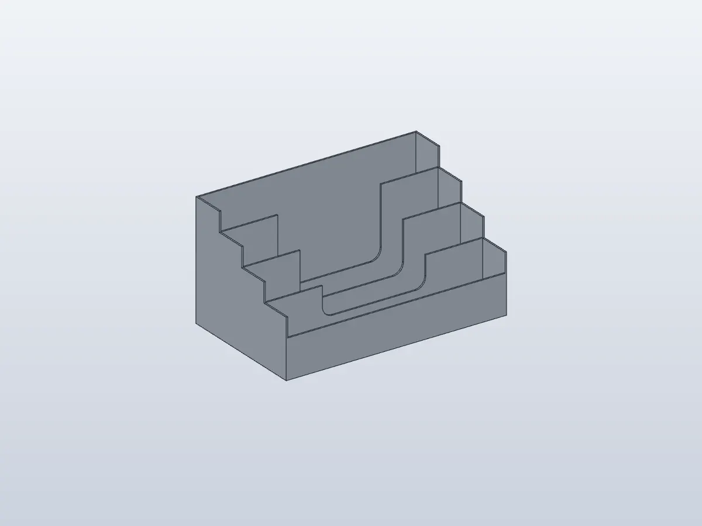

★ Vorzeigeprojekt


In Arbeit
Kühlschrankbox
Der ganze Weg in einem Teil: parametrisches CAD, FieldCraft-Simulation, Slicen und Druck über Home Assistant. Klickkraft von 3 N auf 46 N gesteigert.
KonstruktionDruckVideoMakerWorld
Zum Projekt →Veröffentlicht
Sirup-Halter
Gestufte Fächer für kleine Sirupflaschen: 2 × 4 für die Kühlschranktür, 2 × 2 für daneben. Ohne Stützen.
KonstruktionDruckVideoMakerWorld
Zum Projekt →
In Arbeit
Briefbox
Briefständer mit vier gestuften Fächern und Etikettfeldern, damit die Post nicht mehr lose herumliegt.
KonstruktionDruckVideoMakerWorld
Zum Projekt →In Arbeit
Kamerahalter für die Druckerhaube
Hält eine kleine Kamera schräg über dem Snapmaker U1, damit der Zeitraffer klar wird.
KonstruktionDruckVideoMakerWorld
Zum Projekt →